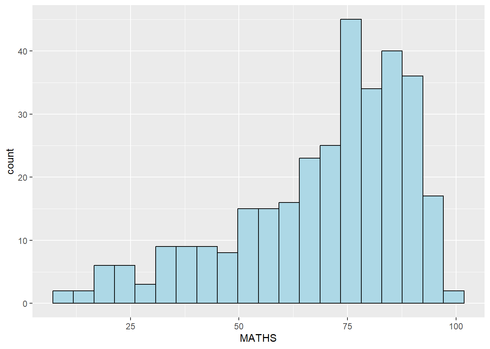

A Layered Grammar of Graphics: ggplot2 methods
Published: 14-Apr-2023
1.1 Learning Outcome
We will:
learn the basic principles and components of ggplot2
gain hands-on experience plotting functional graphs ✌️
1.2 Getting Started
1.2.1 Install and load the required r libraries
Load the tidyverse library. tidyverse is a collection of powerful and popular packages, such as ggplot2, dplyr, in R that are designed to help us work with and manipulate data in a consistent and efficient manner.
1.2.2 Import the data
We import the exam_data.csv data-set. This data-set contains the examination scores of a cohort of Primary 3 students from a local school.
There are a total of seven attributes.
The categorical attributes are: ID, CLASS, GENDER and RACE.
The continuous attributes are: MATHS, ENGLISH and SCIENCE.
1.3 Introduction to ggplot
ggplot is an R package for decoratively creating data-driven graphics based on The Grammar of Graphics.
1.3.1 R Base Graphics Vs ggplot
First, let us compare how R Graphics, the core graphical functions of Base R and ggplot plot a simple histogram.

Base graphics has a pen on paper model: we can only draw on top of the plot, we cannot modify or delete existing content. There is no (user accessible) representation of the graphics, apart from their appearance on the screen. Base graphics includes both tools for drawing primitives and entire plots. Base graphics functions are generally fast, but have limited scope.
On the other hand, ggplot2 has an underlying grammar, based on the Grammar of Graphics (see sections below), that allows us to compose graphs by combining independent components. This makes ggplot2 powerful. Rather than being limited to sets of pre-defined graphics, we can create novel graphics that are tailored to our specific problem.
1.4 Grammar of Graphics
Grammar of Graphics is a general scheme for data visualization which breaks up graphs into semantic components such as scales and layers. It was introduced by Leland Wilkinson (1999) .
In brief, the grammar tells us that a graphic maps the data to the aesthetic attributes (colour, shape, size) of geometric objects (points, lines, bars). The plot may also include statistical transformations of the data and information about the plot’s coordinate system. Facetting can be used to plot for different subsets of the data. The combination of these independent components are what make up a graphic.
1.4.1 A Layered Grammar of Graphics
The 7 layers are:
Data: Refers to the data-set being plotted
Aesthetics: Use the attributes of the data to influence visual characteristics, such as position, colours, size, shape, or transparency.
Geometrics: Represent our data using visual elements such as points, bar or line.
Facets: Split the data into subsets to create small multiples of the same graph (paneling, multiple plots).
Statistics:Apply additional statistical transformations that summarise the data (e.g. mean, confidence intervals).
Coordinates: Define the pane on which data is mapped on the graphic.
Theme: Modify all non-data components of a plot, such as main title, sub-title, y-aixs title, legend, and background.
The purpose of each layer (or component) is further discussed below.
1.5 The Data Layer
Let us call the ggplot() function, with data argument pointing to the data-set to be used for plotting.

Under the hood, a ggplot object is initialized using the data provided. We will need to include 2 other key layers - the aesthetic mappings and geometric layer - to see the plot.
If the data-set is not already a data.frame, it will be converted to one by using the fortify() function.
1.6 The Aesthetic Layer
The aesthetic mappings take attributes of the data and and use them to influence the visual characteristics, such as position, colour, size, shape, or transparency, of the plot.
All aesthetics of a plot are specified in the aes() function call. In the later part of this document, we will see that each geom layer can have its own aes specification.

The tick marks and label for the x-axis are displayed.
1.7 The Geometric Layer
Geometric objects are the actual marks we put on a plot. Examples include:
geom_point for drawing individual points (e.g., a scatter plot)
geom_line for drawing lines (e.g., for a line charts)
geom_smooth for drawing smoothed lines (e.g., for simple trends or approximations)
geom_bar for drawing bars (e.g., for bar, column charts)
geom_histogram for drawing binned values (e.g. a histogram)
geom_polygon for drawing arbitrary shapes
geom_map for drawing polygons in the shape of a map! (we can access the data to use for these maps by using the map_data() function).
A plot must have at least one geom; there is no upper limit. We can add a geom to a plot using the ’+’ operator.
1.7.1 Geometric Object: geom_bar
Yup, it’s a for a bar chart!

1.7.2 Geometric Object: geom_dotplot
In a dot plot, the width of a dot corresponds to the bin width (or maximum width, depending on the binning algorithm), and dots are stacked.

The y-axis is not very useful and can be misleading.
To address the above concern, we take the following steps:
scale_y_continuous()is used to turn off the y-axis, andbinwidth argument is used to change the binwidth to 2.5.

1.7.3 Geometric Object: geom_histogram
geom_histogram() is used to create a simple histogram by using values in MATHS field of exam_data.

Note that the default bin is 30.
1.7.4 Modify a geometric object by changing geom()
The following arguments of the geom() function can be used:
bins argument is used to change the number of bins to 20,
fill argument is used to shade the histogram with light blue color, and
color argument is used to change the outline colour of the bars in black
Show the code

- These changes are applied at the specific geom() layer and will not perpertuate when we include another geom() layer.
1.7.5 Modify a geometric object by changing aes()
We can changes the interior colour of the histogram (i.e. fill) by using sub-group of aes().
Show the code

ggplot2 takes care of the details of converting data into aesthetics (e.g., ‘red’, ‘yellow’, ‘green’) with a scale. There is one scale for each aesthetic mapping in a plot. The scale is also responsible for creating a guide, an axis or legend, that allows us to read the plot, converting aesthetic values back into data values.
If we want to set an aesthetic to a fixed value, without scaling it, do so in the individual layer outside of aes(). Refer to section 1.7.4.
1.7.6 Geometric Object: geom_density
geom-density() computes and plots kernel density estimate, which is a smoothed version of the histogram.
It is a useful alternative to the histogram for continuous data that comes from an underlying smooth distribution.

We can plot two kernel density lines by using colour or fill arguments of aes().

1.7.7 Geometric Object: geom_boxplot
geom_boxplot() displays continuous value list. It visualises five summary statistics (the median, two hinges and two whiskers), and all “outlying” points individually.

Notches are indentation on the box-plot at the median value to help visually assess whether the medians of distributions differ. The notch indicates a confidence interval around the median, calculated using the median absolute deviation. If the notches of two box plots do not overlap, it suggests that the medians of the two groups are significantly different. We can show the indentation using the notch argument.

1.7.8 Geometric Object: geom_violin
geom_violin is designed for creating violin plot. With ordinary density curves (see section 1.7.6), it is difficult to compare more than just a few distributions because the lines visually interfere with each other. With a violin plot, it’s easier to compare several distributions since they’re placed side by side.

1.7.9 Geometric Object: geom_point
geom_point() is especially useful for creating scatterplot.

1.7.10 Combine several geom objects
For instance, we can plot the data points on the boxplots by using both geom_boxplot() and geom_point().
1.8 The Statistics Layer
The Statistics functions statistically transform data, usually as some form of summary. For example:
frequency of values of a variable (bar graph)
a mean
a confidence limit
There are two ways to use these functions:
add a
stat_()function and override the default geom, oradd a
geom_()function and override the default stat.
1.8.1 Working with the stat() function
We can use stat_summary() function to include the mean value on a boxplot.

1.8.2 Working with the geom() function
We can also use the geom() function to get the same result.

1.8.3 Add a best fit curve on a scatter-plot
The scatter-plot below shows the relationship of Maths and English grades of pupils. The interpretability of this graph can be improved by adding a best fit curve using the geom_smooth() function.
Show the code

The default smoothing method used is loess (short for “locally weighted scatter-plot smoothing”). The loess method involves fitting a smooth curve to a scatter-plot of data points, where the curve is weighted to give more emphasis to nearby points and less emphasis to points that are far away.
The default smoothing method can be overridden as shown below. The “lm” method can be used to fit a straight line to a scatterplot of data points. This line represents the best linear approximation of the relationship between the variables and can be used to make predictions or estimate the effect of one variable on the other.

1.9 The Facet Layer
Faceting generates small multiples (sometimes also called trellis plot), each displaying a different subset of the data. They are an alternative to aesthetics for displaying additional discrete variables. ggplot2 supports two types of factes, namely: facet_grid() and facet_wrap().
1.9.1 Working with facet_wrap()
facet_wrap wraps a 1-d sequence of panels into 2-d. This is generally a better use of screen space than facet_grid because most displays are roughly rectangular.
Let’s do a trellis plot using facet-wrap() for the maths score of each class.

1.9.1 Working with facet_grid()
facet_grid() forms a matrix of panels defined by row and column facetting variables. It is most useful when we have two discrete variables, and all combinations of the variables exist in the data.
Show the code
From the above, it’s now more apparent that the maths scores decrease as we move down from Class 3A to Class 3I.
1.10 The Coordinates Layer
There are two types of coordinate systems. Linear coordinate systems preserve the shape of geoms:
coord_cartesian(): the default Cartesian coordinate system, where the 2-d position of an element is given by the combination of the x and y positions.coord_flip(): Cartesian coordinate system with x and y axes flipped.coord_fixed(): Cartesian coordinate system with a fixed aspect ratio.
On the other hand, non-linear coordinate systems can change the shapes: a straight line may no longer be straight. The closest distance between two points may no longer be a straight line.
coord_map()/coord_quickmap()/coord_sf(): Map projections.coord_polar(): Polar coordinates.coord_trans(): Apply arbitrary transformations to x and y positions, after the data has been processed by the stat.
1.10.1 Working with Coordinates
By the default, the bar chart of ggplot2 is in vertical form (i.e. column chart).

We can flip the horizontal bar chart into vertical bar chart by using coord_flip().

1.10.2 Change the y- and x-axis range
We can use the coord_caatesian() function to fix both the y-axis and x-axis range from 0-100.

1.11 The Theme Layer
Themes control elements of the graph not related to the data. For example:
background colour
size of fonts
gridlines
labels colour
Built-in themes include: - theme_gray() (default) - theme_bw() - theme_classic()
A list of theme can be found at this link. Each theme element can be conceived of as either a line (e.g. x-axis), a rectangle (e.g. graph background), or text (e.g. axis title).
1.11.1 Working with theme
A horizontal bar chart plotted using various themes.
theme_classic() is my favourite! 😜


1.12 Reference
Hadley Wickham (2023) ggplot2: Elegant Graphics for Data Analysis. Online 3rd edition.
Winston Chang (2013) R Graphics Cookbook 2nd edition. Online version.
Healy, Kieran (2019) Data Visualization: A practical introduction. Online version
\(**That's\) \(all\) \(folks!**\)